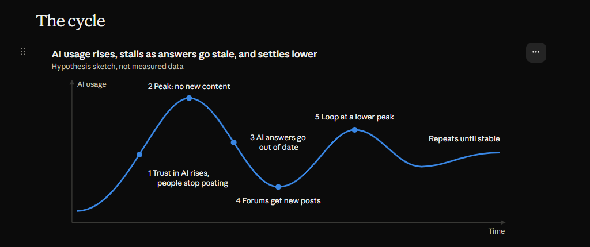

Every major technology wave triggers a predictable panic across product organizations. Leaders feel immense pressure to glue generative AI features into products whether they fit or not. Having navigated multiple platform shifts over two decades, my approach to the AI product cycle is grounded in a simple filter: does this genuinely reduce friction for the user, or is it just a marketing checkbox?
When analyzing developer platform behavior alongside automated AI search indexing, a critical ecosystem dynamic emerges: AI answer engines depend on humans continuously writing fresh troubleshooting content.

Developers stop asking questions directly in community forums because automated assistants answer initial queries.
As forum traffic drops, the creation of fresh, community-sourced edge-case solutions slows down.
Because new platform updates and APIs lack human-written troubleshooting context, AI answers eventually go out of date or hallucinate on edge cases.
Developers experience brittle AI answers on new releases and return to peer forums to find authentic workarounds.
The loop repeats at a lower, more sustainable height until it reaches a stable equilibrium between automated search and human forums.
Product leaders cannot treat AI search as a complete replacement for community infrastructure. Sustainable platforms require a three-pillar architecture where documentation provides baseline structure, tutorials provide guided paths, and peer forums absorb the real-world edge cases that feed the entire ecosystem.
"If you starve the human content supply by hiding community knowledge behind closed walls, your AI assistant eventually runs on empty."